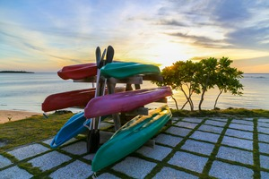
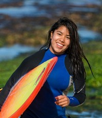

About Us
Our Story
Aqua Adventures was founded in 2010 with a simple yet profound goal: to share our love for kayaking and the great outdoors with fellow enthusiasts. What started as a passion project among friends has blossomed into Victoria's premier kayaking destination, offering unforgettable experiences for adventurers of all ages and skill levels.
Who are we?
At Aqua Adventures, we are more than just a kayak rental and tour company - we are a community of outdoor enthusiasts united by our love for exploration and adventure. Whether you're a seasoned paddler or a first-time kayaker, we welcome you to join us on the water and discover the beauty of British Columbia's coastline.
Our Team
Meet the passionate individuals who make AquaAdventures possible:
Christine - Lead Tour Guide
With an extensive background in surfing and kayaking, Christine brings a wealth of knowledge and expertise to the Aqua Adventures team. As a seasoned tour guide, she delights in sharing her passion for the ocean with guests, leading unforgettable kayaking adventures along Victoria's stunning coastline. Join Christine on a journey of discovery, and together, find adventure!
"I love working at Aqua Adventures because it allows me to share my passion for the ocean with others. I would love to work with you and share my enthusiasm for exploration and discovery!" - Christine B.
Justin - Operations Manager
Justin's connection to the water runs deep, having spent his entire life exploring rivers, lakes, and coastlines by kayak. With a wealth of experience in outdoor leadership and a certification in first aid, Justin ensures that every AquaAdventures excursion is not only thrilling but also safe and memorable.
"Safety is my top priority, and I take pride in ensuring that every excursion is not only thrilling but also safe and enjoyable. I would love to work with you and help you create your own kayaking adventure!" - Justin K.
Ready to try? Contact us to plan your kayaking trip in Victoria, BC.